Explain radiative balance, heat storage and ocean chemistry
Explanation, worked examples and practice
Useful first: Classify the four environmental functions, Trace material, waste and utility paths
Outcome and conditions
Explain infrared absorption/emission and external energy balance, calculate a declared illustrative heat partition and preserve period/coverage/conditionality and ocean-chemistry distinctions. All essential components listed in metadata are required. Hypothetical assessment values instantiate the checked equations; they are not historical observations or observed outcomes. Independent checks are closed-note and without hints, solution access, external retrieval or other assistance; a basic arithmetic calculator is allowed. Teach establishes and records actual help/exposure conditions before claiming independence.
Prerequisites and checks
Check the prerequisites
- O001 outcome and repair route: climate is one of the wider life-support functions.
- O002 outcome and repair route: the wider material/utility system explains why physical environmental changes matter beyond output.
O016-P1, item_version 1, prerequisite_diagnostic. Prompt: Which environmental function includes climate support, and why can the wider environmental system change wellbeing beyond the firms/households consumption loop?
Complete key and rubric: Climate belongs to global biospheric life-supporting services; resources/amenities/waste feedbacks affect wellbeing beyond consumption. Require the correct function and at least one explicit physical/utility path; repair O001 taxonomy and O002 full network. Pass requires every requested reason and result; partial for an omitted reason or unresolved isolated arithmetic slip; fail for the conflicting mechanism. This diagnostic never counts as acquisition. Current or explicitly compatible committed independent prerequisite evidence may permit skipping its check; familiarity alone cannot. Use the cited complete prerequisite lesson or the named included foundation, then the worked example, after a partial/failing entry check.
Motivation, intuition, and definitions
Explain infrared absorption/emission and external energy balance, calculate a declared illustrative heat partition and preserve period/coverage/conditionality and ocean-chemistry distinctions. Establish the definitions, assumptions and relevant comparisons before simplifying an equation. The complete reused passages establish every academic claim, notation choice and qualification assessed here; necessary prerequisites use the complete lessons above.
Explanation steps
Origin: reused complete note introduction before its first subsection, Greenhouse effect, CO2 and Earth's energy, fingerprint 0e546eb44a26562a6831079998cde23dd5004f51769540e9057950e69279b643. Heading depth alone is adapted.
Greenhouse effect, CO2 and Earth's energy
Why does increasing atmospheric greenhouse-gas abundance alter climate, and where does the extra energy go? The lecture links radiation, concentrations and Earth's heat inventory. A temperature change is one consequence of an energy imbalance; ocean heating and ice change are also part of that response. 02_AQImp-ClimateChange.pdf, physical PDF p. 20–39

This source-derived map follows physical pp. 21–39 and distinguishes a radiative mechanism, its evidence and a separate chemical effect of CO2. 02_AQImp-ClimateChange.pdf, physical PDF p. 21–39
Source passage
Origin: reused complete checked passage The radiative mechanism and its limits as an analogy; fingerprint 0e546eb44a26562a6831079998cde23dd5004f51769540e9057950e69279b643. Heading depth alone is adapted.
The radiative mechanism and its limits as an analogy
The Czech schematic on p. 22 shows incoming sunlight, some reflection by Earth's surface/atmosphere, absorption at the surface and outgoing longwave heat radiation. Greenhouse gases/clouds absorb and emit part of that infrared radiation, including downward emission. “Sluneční záření” is solar radiation, “Země” Earth and “atmosféra” atmosphere. The source's text describes this as absorption and “reflection” by greenhouse-gas molecules; the physical mechanism is absorption and re-emission, not a literal infrared mirror. The embedded comment likewise contrasts reflected sunlight and thermal radiation. 02_AQImp-ClimateChange.pdf, physical PDF p. 22, 24–25
The p. 23 historical teaching diagram gives absorbed sunlight \(235\,\mathrm{W}/\mathrm{m}^{2}\), split into \(67\) atmospheric and \(168\) surface absorption. Thermal loss to space is \(195+40=235\,\mathrm{W}/\mathrm{m}^{2}\); its larger internal downward/upward flows (including \(324\) downward and \(350\) absorbed greenhouse radiation) do not create energy but redistribute it within the surface–atmosphere system. These are the figure's illustrative older-budget values, not a current measurement of every energy flux. 02_AQImp-ClimateChange.pdf, physical PDF p. 23

Natural greenhouse warming makes the surface warmer than it would be without this radiative effect. Change in greenhouse-gas abundance enhances that natural effect and changes the balance; a natural greenhouse effect by itself is not synonymous with ongoing human-caused climate change. CO2 is a central long-lived greenhouse gas, not the only one: methane, nitrous oxide and halogenated gases also matter. The source's description of CO2 as “most important” is read in its long-lived anthropogenic context rather than ignoring water-vapour/cloud feedback. 02_AQImp-ClimateChange.pdf, physical PDF p. 24–25
The lecture says CO2 supplied about two-thirds of the total human-produced greenhouse-gas heating influence in 2021. Keep its year and denominator; a share of total forcing and a share of the increase since 1990 are different statistics. Its list includes “black carbon” among gases on pp. 25/48; that is a category error. Black carbon is an aerosol/soot component, not a greenhouse gas. The European Commission JRC glossary explicitly defines it as an aerosol species: consulted definition. 02_AQImp-ClimateChange.pdf, physical PDF p. 24–25, 48
Source passage
Origin: reused complete checked passage Energy imbalance and the heat inventory; fingerprint 0e546eb44a26562a6831079998cde23dd5004f51769540e9057950e69279b643. Heading depth alone is adapted.
Energy imbalance and the heat inventory
Incoming energy minus outgoing radiation is the net energy flux. A positive imbalance means energy accumulates in Earth's system. The source's von Schuckmann et al. 2020 figure estimates \(358\pm37\ \mathrm{ZJ}\) total heat gain over 1971–2018 (\(1\,\mathrm{ZJ}=10^{21}\text{ joules}\)), equivalent to mean \(0.47\pm0.10\ \mathrm{W}/\mathrm{m}^{2}\). Its 2010–2018 estimate is \(0.87\pm0.12\ \mathrm{W}/\mathrm{m}^{2}\). These different periods must remain attached to the values. 02_AQImp-ClimateChange.pdf, physical PDF p. 36–37
For 1971–2018, the diagram partitions heat uptake into ocean 89%, land 6%, cryosphere 4% and atmosphere 1%. Parentheses give 2010–2018 values 90%, 5%, 3%, 2%. Ocean layers account for 52% upper 0–700 m, 28% at 700–2000 m and 9% below 2000 m in the longer period, versus 52/30/8% in the later period. The ocean dominates: surface-air temperature alone does not measure all the accumulated energy. Reference verification: the cited original's §6 and Figure 8/caption reproduce the periods/partition and clarify the conditional calculation: von Schuckmann et al.2020. 02_AQImp-ClimateChange.pdf, physical PDF p. 37

The figure's “\((-57\pm8)\ \mathrm{ppm}\)” is the paper's modeled CO2 reduction from an approximately 410 ppm reference needed to counter its estimated 2010–2018 imbalance under its radiative assumptions. It is neither an observed concentration decline nor an unconditional present-day policy target. The paper also notes other greenhouse-gas changes affect that calculation. 02_AQImp-ClimateChange.pdf, physical PDF p. 37
Physical p. 38 shows ocean-heat-content anomalies relative to 2005–2017 for 0–300, 0–700, 0–2000 and 700–2000 m layers, with ensemble 2σ shading. Some depth bands overlap, so adding all curves would double count heat. The caption specifies the ocean area 60°S–60°N and bathymetry restrictions for the contributing products; do not generalize its per-area axis into an unqualified global total. Rising curves and uncertainty bands support ocean warming within that study coverage. 02_AQImp-ClimateChange.pdf, physical PDF p. 38
Source passage
Origin: reused complete checked passage CO2 also changes ocean chemistry; fingerprint 0e546eb44a26562a6831079998cde23dd5004f51769540e9057950e69279b643. Heading depth alone is adapted.
CO2 also changes ocean chemistry
\(\mathrm{CO}_2\) dissolving into seawater changes carbonate chemistry and lowers pH. Physical p. 39 reports surface-ocean pH falling from \(8.21\) to \(8.10\) since industrialization and contrasts an intact shell with one exposed to more corrosive conditions. “Acidification” means decreasing pH; it does not mean the average seawater has already become acidic in the everyday \(\mathrm{pH}<7\) sense. The shell comparison illustrates a biological consequence but supplies no full experiment protocol for estimating an effect size. This chemical pathway is distinct from the radiative-heating pathway even though both start with increased \(\mathrm{CO}_2\). 02_AQImp-ClimateChange.pdf, physical PDF p. 39
The core foundations are radiation/energy conservation, concentration-versus-emission units and period/reference baselines, because those distinctions keep every graph interpretable. Historical temperatures and the shell image support these mechanisms without becoming current datasets or independent causal estimates. 02_AQImp-ClimateChange.pdf, physical PDF p. 22–39
Worked example
O016-W1, item_version 1, worked_example. Prompt: In a hypothetical short energy budget, absorbed incoming energy is \(240\ \mathrm{W/m^2}\) and outgoing radiation is \(238\ \mathrm{W/m^2}\); internal downward infrared flux is larger than either external flow. Compute the net flux and explain the radiative greenhouse mechanism and conservation. For a separate hypothetical heat inventory of \(100\ \mathrm{ZJ}\) over a specified study period, assume ocean share \(89.0\%\) and compute ocean heat; interpret why atmospheric temperature alone is incomplete. Contrast these invented inputs with the source’s historical \(235\ \mathrm{W/m^{2}}\) budget and 1971–2018 versus 2010–2018 heat estimates. Explain the conditional \(410\to353\ \mathrm{ppm}\) calculation, overlapping ocean-depth curves, black-carbon category and pH \(8.21\to8.10\) meaning.
Complete solution and essential rubric: Net external flux is \(240-238=2.000000\ \mathrm{W/m^{2}}\): positive, so energy accumulates. Greenhouse gases/clouds absorb and emit thermal infrared, including downward emission; this is not a literal mirror or creation of energy. Large internal gross exchanges redistribute energy and do not add independently to the external budget. Natural greenhouse warming and increased abundance enhancing it are different statements. Hypothetical ocean heat is \(100(0.89)=89.000000\ \mathrm{ZJ}\); ocean/land/ice/air together form the inventory. The source older budget balances \(67+168=195+40=235\ \mathrm{W/m^{2}}\). Its measured-study estimates are \(358\pm37\ \mathrm{ZJ}\) and \(0.47\pm0.10\ \mathrm{W}/\mathrm{m}^{2}\) for 1971–2018, and \(0.87\pm0.12\ \mathrm{W}/\mathrm{m}^{2}\) for 2010–2018, with ocean shares \(89\%\) versus \(90\%\); periods are not interchangeable. The paper’s about \(410-57=353\ \mathrm{ppm}\) is a conditional modeled reduction under its estimated imbalance/radiative assumptions and other-gas context, not an observed decline or unconditional current target. Overlapping \(0\text{–}300\), \(0\text{–}700\), \(0\text{–}2000\) and \(700\text{–}2000\) m bands cannot all be summed; region/baseline/\(2\sigma\) qualifications remain. Black carbon is an aerosol, not a greenhouse gas. \(\mathrm{CO}_2\) also alters seawater chemistry: pH declines by \(0.11\) from \(8.21\) to \(8.10\), still above \(7\); acidification is a decrease in pH, a separate pathway from radiative warming. All requested calculations, derivations and qualifications are essential; the component map above applies to every full form.
Practice with fading assistance
Write your reasoning, then reveal the complete key to check each step.
A local draft for your own study.
Reveal explanation
Complete solution and essential rubric: Net external flux is \(230-231=-1.000000\ \mathrm{W/m^{2}}\): negative, so the system loses energy. Greenhouse gases/clouds absorb and emit thermal infrared, including downward emission; this is not a literal mirror or creation of energy. Large internal gross exchanges redistribute energy and do not add independently to the external budget. Natural greenhouse warming and increased abundance enhancing it are different statements. Hypothetical ocean heat is \(200(0.9)=180.000000\ \mathrm{ZJ}\); ocean/land/ice/air together form the inventory. The source older budget balances \(67+168=195+40=235\ \mathrm{W/m^{2}}\). Its measured-study estimates are \(358\pm37\ \mathrm{ZJ}\) and \(0.47\pm0.10\ \mathrm{W}/\mathrm{m}^{2}\) for 1971–2018, and \(0.87\pm0.12\ \mathrm{W}/\mathrm{m}^{2}\) for 2010–2018, with ocean shares \(89\%\) versus \(90\%\); periods are not interchangeable. The paper’s about \(410-57=353\ \mathrm{ppm}\) is a conditional modeled reduction under its estimated imbalance/radiative assumptions and other-gas context, not an observed decline or unconditional current target. Overlapping \(0\text{–}300\), \(0\text{–}700\), \(0\text{–}2000\) and \(700\text{–}2000\) m bands cannot all be summed; region/baseline/\(2\sigma\) qualifications remain. Black carbon is an aerosol, not a greenhouse gas. \(\mathrm{CO}_2\) also alters seawater chemistry: pH declines by \(0.11\) from \(8.21\) to \(8.10\), still above \(7\); acidification is a decrease in pH, a separate pathway from radiative warming. All requested calculations, derivations and qualifications are essential; the component map above applies to every full form.
Allowed support is the first stated identity only; hide the remaining key while the learner completes it. Supported performance is practice, not an independent result.
Rubric and independence
Self-assessment criteria and tutor checks
Required components: radiative_mechanism_and_external_balance, heat_inventory_periods_layers_and_conditioning, aerosol_and_acidification_distinctions. Each full prompt/key below elicits every component; all are necessary for a pass on every permitted pair. Accept algebraically equivalent expressions and clearly defined opposite cash-flow signs with correct interpretation. A pass requires all requested outputs/reasons, correct units/assumptions and no critical conceptual error. Partial means a missing component or an unresolved isolated arithmetic slip with an otherwise valid method; independent correction is required for a pass. Fail means a critical mechanism/condition is wrong. Unscorable means a response or its help/exposure conditions cannot be established. Unknown help conditions are never independent evidence.
Critical errors: Greenhouse effect described as energy creation or literal mirror; periods/depth layers added indiscriminately; conditional 353 ppm labeled current target; black carbon called gas; pH 8.10 called below 7.
Acquisition requires two distinct unused unassisted full checks selected from the six exact metadata routes. Every I/D form covers all components; W1, S1, the prerequisite and C1 are forbidden substitutes. A D form used for acquisition cannot later be counted again as delayed success. No teach-generated item may replace a named full check; additional verified explanation/practice is allowed under the unchanged method and may not fabricate evidence. If fewer than two fresh forms remain for acquisition, return a plan_issue for an additional prepared bank.
| Component | I1 | I2 | D1 | D2 |
|---|---|---|---|---|
| radiative_mechanism_and_external_balance | required | required | required | required |
| heat_inventory_periods_layers_and_conditioning | required | required | required | required |
| aerosol_and_acidification_distinctions | required | required | required | required |
Misconceptions and correction
An observed omitted term/sign is tentative until the learner explains it; compare the reasoning with the critical errors above. Score the original response before providing help. Route a conceptual failure to the relevant included derivation and prerequisite, then use an unused full form.
O016-C1, item_version 1, narrow_correction. Prompt: An internal downward infrared flux exceeds absorbed sunlight. Does that create energy or contradict conservation? Key/rubric: No. Internal gross exchanges can exceed the external input while net incoming/outgoing balance determines accumulation. Count boundary flows, not every internal exchange as new energy. Pass requires all keyed reasoning; partial for a missing part; fail for the conflicting mechanism. This repairs a common inference only; it cannot substitute for a full numerical/capability check.
Give at most two hints (first identify the date/unit, second point to the included identity); after ineffective hints show the relevant worked step. After two unsuccessful independent attempts stop repeated quizzing, revisit the explanation/prerequisite and preserve the unresolved status.
Immediate and delayed checks
Write your reasoning, then reveal the complete key to check each step.
A local draft for your own study.
Reveal explanation
Complete solution and essential rubric: Net external flux is \(250-247=3.000000\ \mathrm{W/m^{2}}\): positive, so energy accumulates. Greenhouse gases/clouds absorb and emit thermal infrared, including downward emission; this is not a literal mirror or creation of energy. Large internal gross exchanges redistribute energy and do not add independently to the external budget. Natural greenhouse warming and increased abundance enhancing it are different statements. Hypothetical ocean heat is \(300(0.89)=267.000000\ \mathrm{ZJ}\); ocean/land/ice/air together form the inventory. The source older budget balances \(67+168=195+40=235\ \mathrm{W/m^{2}}\). Its measured-study estimates are \(358\pm37\ \mathrm{ZJ}\) and \(0.47\pm0.10\ \mathrm{W}/\mathrm{m}^{2}\) for 1971–2018, and \(0.87\pm0.12\ \mathrm{W}/\mathrm{m}^{2}\) for 2010–2018, with ocean shares \(89\%\) versus \(90\%\); periods are not interchangeable. The paper’s about \(410-57=353\ \mathrm{ppm}\) is a conditional modeled reduction under its estimated imbalance/radiative assumptions and other-gas context, not an observed decline or unconditional current target. Overlapping \(0\text{–}300\), \(0\text{–}700\), \(0\text{–}2000\) and \(700\text{–}2000\) m bands cannot all be summed; region/baseline/\(2\sigma\) qualifications remain. Black carbon is an aerosol, not a greenhouse gas. \(\mathrm{CO}_2\) also alters seawater chemistry: pH declines by \(0.11\) from \(8.21\) to \(8.10\), still above \(7\); acidification is a decrease in pH, a separate pathway from radiative warming. All requested calculations, derivations and qualifications are essential; the component map above applies to every full form.
I1/I2 are immediate checks; D1/D2 are distinct parallel variants reserved where possible for delayed checks. A delayed success requires an unused form before recap, no help/solution access, and at least 24 actual elapsed hours after acquisition and the most recent relevant teaching/solution exposure. Record intervening exposure. A calendar-date change alone is insufficient; an early D attempt is immediate evidence only.
A local draft for your own study.
Reveal explanation
Complete solution and essential rubric: Net external flux is \(235-234=1.000000\ \mathrm{W/m^{2}}\): positive, so energy accumulates. Greenhouse gases/clouds absorb and emit thermal infrared, including downward emission; this is not a literal mirror or creation of energy. Large internal gross exchanges redistribute energy and do not add independently to the external budget. Natural greenhouse warming and increased abundance enhancing it are different statements. Hypothetical ocean heat is \(150(0.9)=135.000000\ \mathrm{ZJ}\); ocean/land/ice/air together form the inventory. The source older budget balances \(67+168=195+40=235\ \mathrm{W/m^{2}}\). Its measured-study estimates are \(358\pm37\ \mathrm{ZJ}\) and \(0.47\pm0.10\ \mathrm{W}/\mathrm{m}^{2}\) for 1971–2018, and \(0.87\pm0.12\ \mathrm{W}/\mathrm{m}^{2}\) for 2010–2018, with ocean shares \(89\%\) versus \(90\%\); periods are not interchangeable. The paper’s about \(410-57=353\ \mathrm{ppm}\) is a conditional modeled reduction under its estimated imbalance/radiative assumptions and other-gas context, not an observed decline or unconditional current target. Overlapping \(0\text{–}300\), \(0\text{–}700\), \(0\text{–}2000\) and \(700\text{–}2000\) m bands cannot all be summed; region/baseline/\(2\sigma\) qualifications remain. Black carbon is an aerosol, not a greenhouse gas. \(\mathrm{CO}_2\) also alters seawater chemistry: pH declines by \(0.11\) from \(8.21\) to \(8.10\), still above \(7\); acidification is a decrease in pH, a separate pathway from radiative warming. All requested calculations, derivations and qualifications are essential; the component map above applies to every full form.
A local draft for your own study.
Reveal explanation
Complete solution and essential rubric: Net external flux is \(245-242=3.000000\ \mathrm{W/m^{2}}\): positive, so energy accumulates. Greenhouse gases/clouds absorb and emit thermal infrared, including downward emission; this is not a literal mirror or creation of energy. Large internal gross exchanges redistribute energy and do not add independently to the external budget. Natural greenhouse warming and increased abundance enhancing it are different statements. Hypothetical ocean heat is \(250(0.89)=222.500000\ \mathrm{ZJ}\); ocean/land/ice/air together form the inventory. The source older budget balances \(67+168=195+40=235\ \mathrm{W/m^{2}}\). Its measured-study estimates are \(358\pm37\ \mathrm{ZJ}\) and \(0.47\pm0.10\ \mathrm{W}/\mathrm{m}^{2}\) for 1971–2018, and \(0.87\pm0.12\ \mathrm{W}/\mathrm{m}^{2}\) for 2010–2018, with ocean shares \(89\%\) versus \(90\%\); periods are not interchangeable. The paper’s about \(410-57=353\ \mathrm{ppm}\) is a conditional modeled reduction under its estimated imbalance/radiative assumptions and other-gas context, not an observed decline or unconditional current target. Overlapping \(0\text{–}300\), \(0\text{–}700\), \(0\text{–}2000\) and \(700\text{–}2000\) m bands cannot all be summed; region/baseline/\(2\sigma\) qualifications remain. Black carbon is an aerosol, not a greenhouse gas. \(\mathrm{CO}_2\) also alters seawater chemistry: pH declines by \(0.11\) from \(8.21\) to \(8.10\), still above \(7\); acidification is a decrease in pH, a separate pathway from radiative warming. All requested calculations, derivations and qualifications are essential; the component map above applies to every full form.
A local draft for your own study.
Reveal explanation
Complete solution and essential rubric: Net external flux is \(225-227=-2.000000\ \mathrm{W/m^{2}}\): negative, so the system loses energy. Greenhouse gases/clouds absorb and emit thermal infrared, including downward emission; this is not a literal mirror or creation of energy. Large internal gross exchanges redistribute energy and do not add independently to the external budget. Natural greenhouse warming and increased abundance enhancing it are different statements. Hypothetical ocean heat is \(180(0.9)=162.000000\ \mathrm{ZJ}\); ocean/land/ice/air together form the inventory. The source older budget balances \(67+168=195+40=235\ \mathrm{W/m^{2}}\). Its measured-study estimates are \(358\pm37\ \mathrm{ZJ}\) and \(0.47\pm0.10\ \mathrm{W}/\mathrm{m}^{2}\) for 1971–2018, and \(0.87\pm0.12\ \mathrm{W}/\mathrm{m}^{2}\) for 2010–2018, with ocean shares \(89\%\) versus \(90\%\); periods are not interchangeable. The paper’s about \(410-57=353\ \mathrm{ppm}\) is a conditional modeled reduction under its estimated imbalance/radiative assumptions and other-gas context, not an observed decline or unconditional current target. Overlapping \(0\text{–}300\), \(0\text{–}700\), \(0\text{–}2000\) and \(700\text{–}2000\) m bands cannot all be summed; region/baseline/\(2\sigma\) qualifications remain. Black carbon is an aerosol, not a greenhouse gas. \(\mathrm{CO}_2\) also alters seawater chemistry: pH declines by \(0.11\) from \(8.21\) to \(8.10\), still above \(7\); acidification is a decrease in pH, a separate pathway from radiative warming. All requested calculations, derivations and qualifications are essential; the component map above applies to every full form.
Content provenance and generation boundaries
Sources and scope
Explanations, figures and qualifications above reuse complete checked-note sections with exact origin/fingerprint; heading depth alone is adapted. Main exercises and worked arithmetic are plan-created hypothetical instantiations of those displayed identities. No additional academic claims or external course scope are introduced. Preserve the note conventions and explicit qualifications; checked references reused from notes are not an independent raw-source audit by plan. New numerical practice can use the same method only after its complete solution and unchanged components are checked before display; it cannot replace this lesson’s named evidence forms. Prerequisites route to the complete prepared lessons above.
Greenhouse effect, CO2 and Earth's energy
Read the full checked source context
Why does increasing atmospheric greenhouse-gas abundance alter climate, and where does the extra energy go? The lecture links radiation, concentrations and Earth's heat inventory. A temperature change is one consequence of an energy imbalance; ocean heating and ice change are also part of that response. 02_AQImp-ClimateChange.pdf, physical PDF p. 20–39
This source-derived map follows physical pp. 21–39 and distinguishes a radiative mechanism, its evidence and a separate chemical effect of CO2. 02_AQImp-ClimateChange.pdf, physical PDF p. 21–39
The radiative mechanism and its limits as an analogy
The Czech schematic on p. 22 shows incoming sunlight, some reflection by Earth's surface/atmosphere, absorption at the surface and outgoing longwave heat radiation. Greenhouse gases/clouds absorb and emit part of that infrared radiation, including downward emission. “Sluneční záření” is solar radiation, “Země” Earth and “atmosféra” atmosphere. The source's text describes this as absorption and “reflection” by greenhouse-gas molecules; the physical mechanism is absorption and re-emission, not a literal infrared mirror. The embedded comment likewise contrasts reflected sunlight and thermal radiation. 02_AQImp-ClimateChange.pdf, physical PDF p. 22, 24–25
The p. 23 historical teaching diagram gives absorbed sunlight \(235\,\mathrm{W}/\mathrm{m}^{2}\), split into \(67\) atmospheric and \(168\) surface absorption. Thermal loss to space is \(195+40=235\,\mathrm{W}/\mathrm{m}^{2}\); its larger internal downward/upward flows (including \(324\) downward and \(350\) absorbed greenhouse radiation) do not create energy but redistribute it within the surface–atmosphere system. These are the figure's illustrative older-budget values, not a current measurement of every energy flux. 02_AQImp-ClimateChange.pdf, physical PDF p. 23
Natural greenhouse warming makes the surface warmer than it would be without this radiative effect. Change in greenhouse-gas abundance enhances that natural effect and changes the balance; a natural greenhouse effect by itself is not synonymous with ongoing human-caused climate change. CO2 is a central long-lived greenhouse gas, not the only one: methane, nitrous oxide and halogenated gases also matter. The source's description of CO2 as “most important” is read in its long-lived anthropogenic context rather than ignoring water-vapour/cloud feedback. 02_AQImp-ClimateChange.pdf, physical PDF p. 24–25
The lecture says CO2 supplied about two-thirds of the total human-produced greenhouse-gas heating influence in 2021. Keep its year and denominator; a share of total forcing and a share of the increase since 1990 are different statistics. Its list includes “black carbon” among gases on pp. 25/48; that is a category error. Black carbon is an aerosol/soot component, not a greenhouse gas. The European Commission JRC glossary explicitly defines it as an aerosol species: consulted definition. 02_AQImp-ClimateChange.pdf, physical PDF p. 24–25, 48
Concentration is not a global daily average by default
A concentration in ppm measures a fraction of atmospheric molecules; Mauna Loa is a particular station, a daily/monthly average is not an annual average, and a global marine-surface estimate is not a station reading. The seasonal cycle on the Mauna Loa graphs reflects Northern Hemisphere vegetation uptake/decay over the year, superimposed on a long-term human-driven rise. 02_AQImp-ClimateChange.pdf, physical PDF p. 27–29
The source reports global \(419.3\ \mathrm{ppm}\) in 2023, global \(422.7\ \mathrm{ppm}\) in 2024, and a Mauna Loa daily \(425.68\ \mathrm{ppm}\) on 1 November 2025; the last is a source-reported dated station value, not independently reconstructed daily data. Its 2024 “increase over 2023” \(3.75\ \mathrm{ppm}\) is not the arithmetic difference of the displayed annual means (\(422.7-419.3=3.4\)). These statements mix vintages and annual-average versus within-year growth conventions. Reference check: NOAA's archived 21 May 2025 article reports global 2024 annual \(422.8\ \mathrm{ppm}\), within-2024 increase \(3.75\ \mathrm{ppm}\) and Mauna Loa annual \(424.61\ \mathrm{ppm}\). This explains why year/series/averaging definition must accompany a number; the source \(422.7\) differs from that reference and from its own p. 30 figure \(422.8\). NOAA, “Carbon dioxide levels in 2024”. These are documented historical comparisons, not live 2026 concentrations. 02_AQImp-ClimateChange.pdf, physical PDF p. 28–30
Physical p. 30 compares an 800,000-year ice-core record (below about 300 ppm in that displayed record) with a modern dot. Its graphic labels 2024 average 422.8 ppm, while the caption still says 2022. The observed lesson is the large, rapid recent rise relative to those glacial/interglacial variations; the inconsistent caption year is retained explicitly rather than relabeling the figure silently. The source attributes the underlying reconstruction to Lüthi et al. 2008/NOAA NCEI. 02_AQImp-ClimateChange.pdf, physical PDF p. 30
Reading the temperature evidence
Physical p. 32 is a deep-time reconstructed-temperature composite with nonuniform time scales: millions, then thousands of years, with geological periods and human-evolution labels. It illustrates long-run climate variation; straight visual slopes across scale changes do not measure comparable rates. Physical p. 33's heading mentions a “hockey stick dispute,” but its actual graph compares several historical temperature series over roughly 1840–2000. It is not, by itself, a millennium reconstruction or a resolution of every attribution dispute. 02_AQImp-ClimateChange.pdf, physical PDF p. 32–33
Physical p. 34 is explicitly a one-day average 2 m temperature field for 25 February 2018 from GFS/ClimateReanalyzer. It shows spatial weather variation, not a global multi-decade trend or an anomaly with a stated climatology. Physical p. 35 instead gives a global land/sea temperature anomaly relative to 1961–1990, with an 1850–2023 plotted record and grey 95% confidence bounds. An anomaly is a difference from that reference mean, not the absolute surface temperature. It cannot be directly equated with a warming target relative to a different preindustrial baseline. 02_AQImp-ClimateChange.pdf, physical PDF p. 34–35
Energy imbalance and the heat inventory
Incoming energy minus outgoing radiation is the net energy flux. A positive imbalance means energy accumulates in Earth's system. The source's von Schuckmann et al. 2020 figure estimates \(358\pm37\ \mathrm{ZJ}\) total heat gain over 1971–2018 (\(1\,\mathrm{ZJ}=10^{21}\text{ joules}\)), equivalent to mean \(0.47\pm0.10\ \mathrm{W}/\mathrm{m}^{2}\). Its 2010–2018 estimate is \(0.87\pm0.12\ \mathrm{W}/\mathrm{m}^{2}\). These different periods must remain attached to the values. 02_AQImp-ClimateChange.pdf, physical PDF p. 36–37
For 1971–2018, the diagram partitions heat uptake into ocean 89%, land 6%, cryosphere 4% and atmosphere 1%. Parentheses give 2010–2018 values 90%, 5%, 3%, 2%. Ocean layers account for 52% upper 0–700 m, 28% at 700–2000 m and 9% below 2000 m in the longer period, versus 52/30/8% in the later period. The ocean dominates: surface-air temperature alone does not measure all the accumulated energy. Reference verification: the cited original's §6 and Figure 8/caption reproduce the periods/partition and clarify the conditional calculation: von Schuckmann et al.2020. 02_AQImp-ClimateChange.pdf, physical PDF p. 37
The figure's “\((-57\pm8)\ \mathrm{ppm}\)” is the paper's modeled CO2 reduction from an approximately 410 ppm reference needed to counter its estimated 2010–2018 imbalance under its radiative assumptions. It is neither an observed concentration decline nor an unconditional present-day policy target. The paper also notes other greenhouse-gas changes affect that calculation. 02_AQImp-ClimateChange.pdf, physical PDF p. 37
Physical p. 38 shows ocean-heat-content anomalies relative to 2005–2017 for 0–300, 0–700, 0–2000 and 700–2000 m layers, with ensemble 2σ shading. Some depth bands overlap, so adding all curves would double count heat. The caption specifies the ocean area 60°S–60°N and bathymetry restrictions for the contributing products; do not generalize its per-area axis into an unqualified global total. Rising curves and uncertainty bands support ocean warming within that study coverage. 02_AQImp-ClimateChange.pdf, physical PDF p. 38
CO2 also changes ocean chemistry
\(\mathrm{CO}_2\) dissolving into seawater changes carbonate chemistry and lowers pH. Physical p. 39 reports surface-ocean pH falling from \(8.21\) to \(8.10\) since industrialization and contrasts an intact shell with one exposed to more corrosive conditions. “Acidification” means decreasing pH; it does not mean the average seawater has already become acidic in the everyday \(\mathrm{pH}<7\) sense. The shell comparison illustrates a biological consequence but supplies no full experiment protocol for estimating an effect size. This chemical pathway is distinct from the radiative-heating pathway even though both start with increased \(\mathrm{CO}_2\). 02_AQImp-ClimateChange.pdf, physical PDF p. 39
The core foundations are radiation/energy conservation, concentration-versus-emission units and period/reference baselines, because those distinctions keep every graph interpretable. Historical temperatures and the shell image support these mechanisms without becoming current datasets or independent causal estimates. 02_AQImp-ClimateChange.pdf, physical PDF p. 22–39